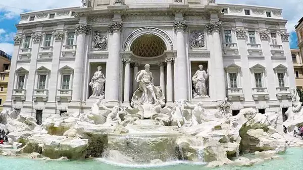
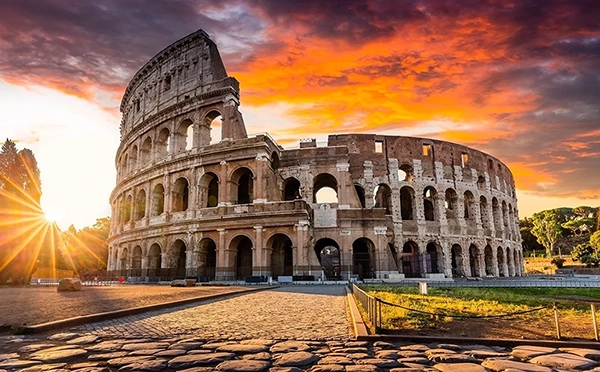
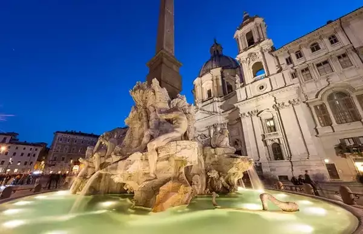
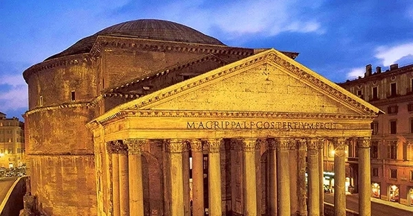
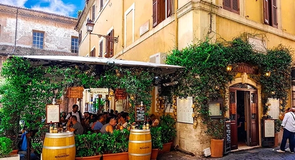

5 lugares que visitar en Roma
En esta lista te dejamos los 5 mejores lugares para visitar en Roma. Te ayudará a no perderte de las cosas más imprescindibles en una de las ciudades más increíbles del mundo, aprovechando al máximo el tiempo..
-
Leer mas
La fontana di Trevi
Después de unos cuantos años en los que únicamente se podía ver entre andamios por las obras de restauración, a día de hoy podemos decir que la Fontana di Trevi luce en su máximo esplendor.
-
Leer mas
El coliseo
Una de las mejores cosas que hacer en Roma es retroceder más de 2.000 años entrando en el Coliseo, el monumento más espectacular de la ciudad y una de las siete maravillas del mundo.
-
Leer mas
Piazza Navona
En esta gran plaza alargada destacan sus tres fuentes barrocas: la del Moro, la del Nettuno y sobre todo, la de los 4 ríos, la más espectacular que representa los 4 ríos más importantes de aquella época: el Danubio, el Nilo, el Ganges y el Río de la Plata.
-
Leer mas
El Panteón de Agripa
La visita al Panteón de Agripa, finalizado en el 125 DC y considerado el edificio mejor conservado del Imperio Romano, es una de las mejores cosas que ver y hacer en Roma gratis.
-
Leer mas
El Trastevere
El Trastevere es uno de los barrios más famosos de la ciudad, repleto de rincones llenos de encanto, tiendas artesanales y tabernas con aire bohemio, que lo convierten en otro de los lugares que ver en Roma más bonitos inaugurado en el 130 DC.